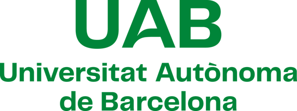

Consultancy
AI adoption for teams that are not technical.
The HCD Barcelona consultancy works with content, education, marketing and communications teams that want to use AI well: knowing where it saves real time, where it creates risk, and where a person must stay in charge.
Worked with
Organisations the founder of HCD Barcelona has worked with.

Three ways to work with HCD Barcelona
Start small, go as deep as the work needs.
Discovery Call
90 minutes · €290
The client talks HCD Barcelona through current AI initiatives: what is running, what has stalled, what is under consideration. The session ends with an opportunity map and clear next steps, and the client can put any question to the consultant along the way.
AI Workflow Audit
From €1,200 · 1 day of interviews in person, 2 days remote · process map delivered within a week
An HCD Barcelona consultant spends a day inside the company interviewing the people who do the work, or two days when the engagement runs remotely. The result is a full process map showing how work actually happens, with concrete suggestions on what to automate and what to leave with a person.
AI Adoption Workshop
Half day or full day · priced per engagement
A hands-on session for non-technical teams, built around the team's own processes and tools. Participants leave knowing where AI helps their work, where it does not, and how to use it with a person always checking the result.
Principles
How HCD Barcelona works
Engagements are led by founder Daria Gavrilova, an AI adoption and enablement specialist.